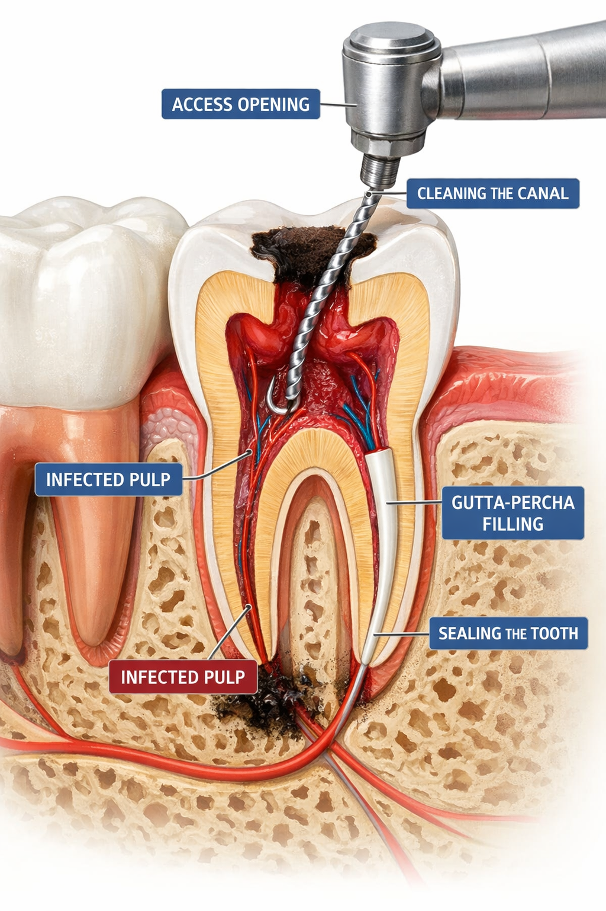

At our dental studios, we provide expert root canal therapy designed to save severely decayed or infected teeth, relieving pain and avoiding the need for extraction. Using advanced, high-magnification technology and gentle, modern techniques, our skilled clinicians carefully remove infected pulp, thoroughly disinfect the root canals, and seal them with a bio-compatible material to prevent future infection. Most procedures are completed over one or two appointments under local anaesthetic, ensuring a comfortable, pain-free experience. To ensure long-term success, our dedicated team focuses on restoring the tooth’s full strength and functionality, typically completing the treatment with a custom crown to protect your natural smile.